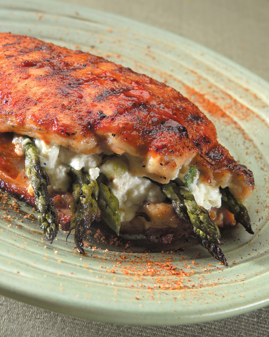

← Back to index
Grilled Chicken with Chile-Pecan BBQ Sauce

Servings: 4
Ingredients
- The Chicken:
- 4 chicken halves or 8 chicken quarters
- Olive oil
- Kosher salt and cracked black pepper
- Dried thyme
- The Sauce:
- 1 cup pecans
- 2 tablespoons olive oil
- ½ cup minced onion
- 4 to 5 large cloves garlic, minced
- 1 tablespoon minced, seeded jalapeño pepper
- Pinch each of kosher salt and black pepper
- 1 cup chicken broth or stock (to make your own, see Beef Stock )
- 1 ½ cups Mutha Sauce
- 1 teaspoon ground ancho chile
- ½ teaspoon ground cumin
- 1 ½ tablespoons honey
- 2 tablespoons butter, cut in 6 pieces
- 2 tablespoons sliced scallion
Instructions
- Oil the chicken and season on both sides with salt, cracked pepper, and a sprinkling of thyme.
- Build a medium coal bed in your grill. It should register from 325° to 350° with the lid down. Open the grill and arrange the chicken skin side up with the thickest parts to the center. Close the lid and cook for 25 to 30 minutes. Give the chicken a flip so the skin side’s down and cook, covered, til golden, about 20 minutes more, or til it reaches an internal temperature of 160° to 165°.
- Fix up a batch of sauce while the chicken’s cooking. Toast the pecans in a 350° oven til fragrant and lightly browned, about 10 minutes. Chop them coarsely. Set aside.
- Heat the oil gently in a saucepan over medium heat, add the onions, garlic, and jalapeños with a pinch of salt and pepper, and cook til soft. Pour in the chicken broth and the Mutha Sauce; simmer til reduced by a quarter, about 15 minutes. Add the chile, cumin, honey, and pecans. Keep warm. Just before serving, take the sauce off the heat and swirl in the butter, one piece at a time, til melted. Stir in the scallions.
- Pull the chicken pieces off the grill and serve them smothered in sauce.